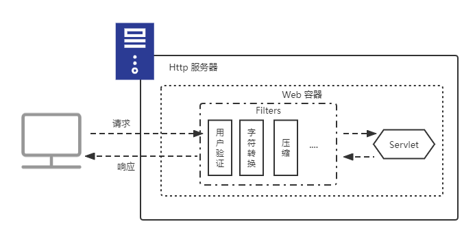

过滤器
过滤器（Filter）正如其名所示，是介于 Servlet 之前，可拦截过滤 Servlet 请求，也可以改变 Servlet 的响应。

性能评测、用户验证、字符替换，编码设置等需求，基本上于应用程序的业务需求没有直接的关系，只是应用程序的额外原件之一，因此应该设计成独立元件，可以随时假如到应用程序中，也可以随时移除，或可以随时修改设置而不用修改原有的程序。这类元件就像一个过滤器一样，安插在客户端和 Servlet 中间，可以过滤请求与响应。
Filter
Filter 架构设计和 Servlet 非常相似，配置的方式也几乎一模一样。
| Filter API | Servlet API | |
|---|---|---|
| Filter#init | ------------- | Servlet#init |
| Filter#doFilter | ------------- | Servlet#service |
| Filter#destroy | ------------- | Servlet#destory |
| FilterConfig | ------------- | ServletConfig |
| GenericFilter | ------------- | GenericServlet |
| HttpFilter | ------------- | HttpServlet |
public inteface Filter {
//Filter 实例初始化后被调用
public default void init(FilterConfig filterConfig) throws ServletException;
// Filter 逻辑处理
public void doFilter(ServletRequest request,ServletResponse reponse,FilterChain chain) throws IOException,ServletException;
// filter 实例销毁前被调用
public default void destroy();
}
下面是一个编码过滤器的例子：
@WebFilter(
urlPatterns= {"/*"},//过滤器路径匹配，只有匹配的请求才会应用该拦截器
initParams= {
// 等同于 Web.xml 中的 <init-param> 但是优先级比 <init-param> 低。
@WebInitParam(name="ENCODING",value="UTF-8")
},
//过滤器默认情况只会拦截客户端之间发送的请求
//其他的类型的请求需要手动配置拦截，比如那些通过 RequestDispatcher 的 forward 或者 include。
dispatcherTypes={
DispatcherType.REQUEST,
DispatcherType.FORWARD,
DispatcherType.INCLUDE,
DispatcherType.ERROR,
DispatcherType.ASYNC
}
)
public class EncodingFilter extends HttpFilter{
private static final long serialVersionUID = -2940608237161303115L;
private String ENCODING;
@Override
public void init() {
ENCODING=getInitParameter("ENCODING");
}
public void doFilter(HttpServletRequest req, HttpServletResponse res,FilterChain chain)
throws IOException, ServletException{
//设置请求 Body 的编码
req.setCharacterEncoding(ENCODING);
//处理 GET 请求参数编码
chain.doFilter(new EncoderWrapper(req), res);
}
}
Filter 的声明方式有两种：@WebFilter 注解和 Web.xml，其中 @WebFilter 的使用方式如上所示，而 Web.xml 如下所示：
<!-- 作用等同于上面的 @WebFilter，但是优先级 @WebFilter 高 -->
<filter>
<filter-name>encoding</filter-name>
<filter-class>pers.cocoadel.filter.EncodingFilter</filter-class>
<init-param>
<param-name>ENCODING</param-name>
<param-value>UTF-8</param-value>
</init-param>
</filter>
<filter-mapping>
<filter-name>encoding</filter-name>
<url-pattern>/*</url-pattern>
<dispatcher>REQUEST</dispatcher>
<dispatcher>FORWARD</dispatcher>
<dispatcher>INCLUDE</dispatcher>
<dispatcher>ERROR</dispatcher>
<dispatcher>ASYNC</dispatcher>
</filter-mapping>
请求封装器
这里举一个例子来说明请求封装器的作用。
GET 参数编码处理
在 Servlet 的章节中，我们知道了 setCharacterEncoding 方法只对请求 Body 有作用，对 URI 没有作用，也就是说它不能统一 Get 请求的参数编码处理。如果我们想统一所有请求的参数编码处理，怎么办呢？分别在每个 doGet 方法中对参数进行处理显然太麻烦，Filter 是一个更好的选择。然而 ServletRequest 只有 getParameter 方法而没有 setParameter 方法，那么在 Filter 中编码转换后的参数我们该如何重新放回 ServletRequest 中去呢？ 重新实现一个 HttpServletRequest 对象的话太过麻烦，这时候请求封装器（HttpServletRequestWrapper）就派上用场了。
Tomcat 7 之前处理 URI 的默认编码是 “ISO-8859-1”，Tomcat 8 之后默认是 ”UTF-8“。
HttpServletRequestWrapper 实现了 HttpServletRequest 接口，我们可以继承 HttpServletRequestWrapper，然后重写自己想要实现的方法即可，下面以上面示例 EncodingFilter 中用到的 EncoderWrapper为例：
public class EncoderWrapper extends HttpServletRequestWrapper{
public EncoderWrapper(HttpServletRequest request) {
super(request);
}
//重写 getParameter 方法。
public String getParameter(String name) {
return Optional.ofNullable(getRequest().getParameter(name))
.map(this::encode)
.orElse(null);
}
//ISO-8859-1 -> UTF-8
private String encode(String content) {
try {
content=new String(content.getBytes("ISO-8809-1"),"UTF-8");
return Encode.forHtml(content);//转换 HTML 字符，防止注入攻击
}catch(Exception e) {
throw new RuntimeException(e);
}
}
}
响应封装器
这里同样是举一个例子说明响应封装器的作用。
响应压缩
如果相对响应内容进行压缩处理，就要想办法让 HttpServletResponse 对象具有压缩处理功能，这里可以使用 HttpServletResponseWrapper 来对 HttpServletResponse 对象进行封装。
// 可以在 Filter 的 doFiler 方法中返回封装了 HttpServletResponse 对象的 CompressionWrapper 对象
public class CompressionWrapper extends HttpServletResponseWrapper {
private GZipServletOutputStream gzServletOutputStream;
private PrintWriter printWriter;
public CompressionWrapper(HttpServletResponse response) {
super(response);
}
//返回有压缩功能的输出流 GZipServletOutputStream
@Override
public ServletOutputStream getOutputStream() throws IOException {...}
//返回封装了 GZipServletOutputStream 的 PrintWriter
@Override
public PrintWriter getWriter() throws IOException {...}
//对 printWriter 或者 gzServletOutputStream 调用 flush
@Override
public void flushBuffer() throws IOException {...}
//关闭 printWriter 或者 gzServletOutputStream
public void finish() throws IOException{...}
}